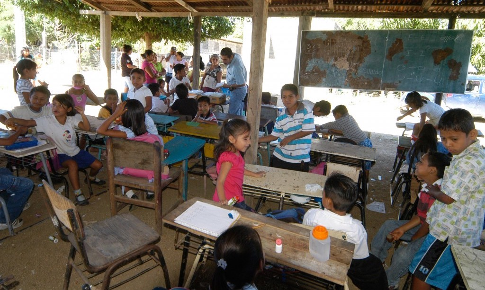

Global Learning XPRICE Competition
April 6, 2017


Technology has a big impact on children’s education. Unfortunately, not every child will have access to it. The amazing thing is that we continue to tackle this problem. I came upon the $15 million Global Learning XPRICE competition that is challenging teams “from all over the world to develop an open source scalable software solution that will enable children in developing countries to teach themselves basic reading, writing and arithmetic within the 18-month competition field-testing period(XPRICE).”
As the competition name begins with $15 million that is the prize that will be awarded. The money is divided into two categories. One is five team finalists will receive $1 million each, and the second is the grand prize winner with a $10 million based on the field testing of the team’s solution. Their challenge is to develop an open source scalable software learning solution for children and communities around the world.
There a lots of children that have no access to quality schools or teachers. The demand of building schools and train teachers is not there. That is why through this challenge the barrier is redefined. The $15 million Global Learning XPRIZE competition plans to open-source the winning program, and bring it to children around the world.
XPRIZE is a non-profit organization that manages and designs public competitions that they think will benefit mankind. It was founded by Peter Diamandis in 1995. I’m very excited about this competition because they are tackling a problem that is not seen as a concern. There are 136 teams registered who come from over 40 different countries around the world. I can’t wait to follow up on this to see what the teams come up with. The results will be amazing. To learn more in depth about the competition, click below.